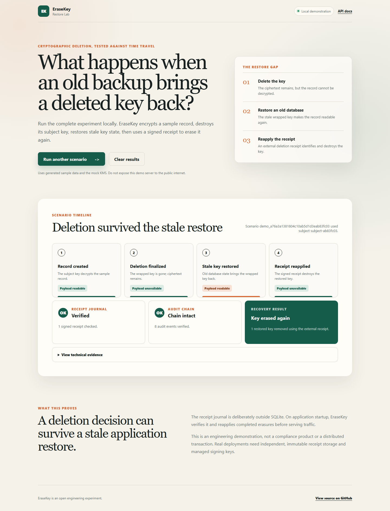

1. Encrypt per subject
Records are encrypted with subject-scoped data keys, wrapped by the configured key provider.
Restore-safe deletion lab
EraseKey is a small FastAPI project that tests one awkward edge case in cryptographic deletion: stale database state can restore both the ciphertext and the wrapped key needed to read it.

Problem
Backups, replicas, exports, and old snapshots can outlive the live database row. Envelope encryption helps by making old ciphertext unreadable, but there is a second failure mode: if the wrapped key and deletion record live in the same database, a restore can bring both the key and the forgotten deletion state back at once.
Mechanism
Records are encrypted with subject-scoped data keys, wrapped by the configured key provider.
Finalization removes the wrapped subject key. Ciphertext remains, but the API can no longer decrypt it.
A signed receipt journal sits outside the app database and drives re-erasure after stale restores.
Try it
git clone https://github.com/Qarait/EraseKey.git
cd EraseKey/mvp/erasekey
python -m venv .venv
.\.venv\Scripts\Activate.ps1
pip install -r requirements.txt -r requirements-dev.txt
uvicorn app.main:app --reloadOpen http://127.0.0.1:8000/dashboard and run the scenario.
Boundaries
The useful part is the shape of the failure and the continuity protocol, not the claim that this repository is production-ready.